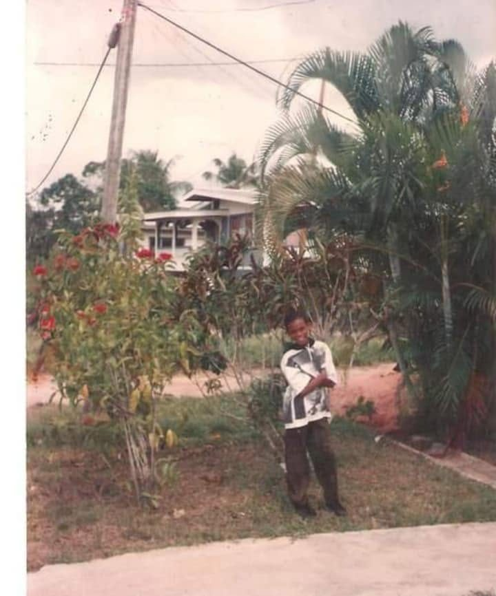
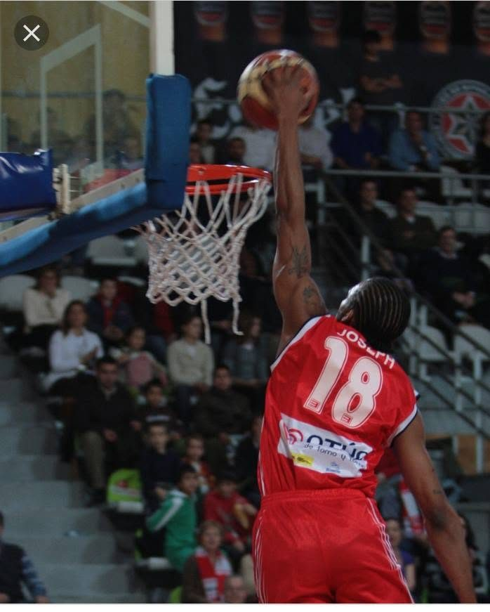
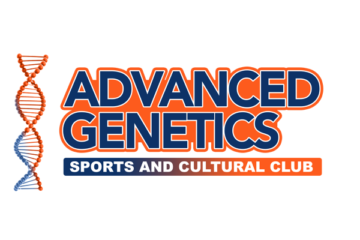

About Adrian
A Decorated Career, Built Across Three Continents
B.A. Anthropology (University of Virginia) · FIBA Certified Coach · SMWW Certified Basketball Agent
Where It Started
La Romaine, San Fernando
Adrian Joseph was born and raised in La Romaine, Trinidad and Tobago, the very community his club now works to transform. Standing 6 feet 7 inches tall, he showed exceptional athletic ability early, but there was no elite basketball development infrastructure in the Southern Region built to nurture that kind of talent.
He began his basketball journey at St. Benedict's College in La Romaine, where he later returned as head coach. The absence of a structured pathway at home eventually pushed him to migrate to the United States on a basketball scholarship at age 14, in pursuit of academic and athletic opportunities that did not yet exist in Trinidad.


USA & NCAA Division I
Three High Schools, One Goal
After relocating to the United States, Joseph spent three more years in high school, moving from Marianapolis Preparatory School in Thompson, Connecticut, to Bergen Catholic High School in Oradell, New Jersey, and finally to Brewster Academy in New Hampshire. Each move was made to compete at a higher level and gain more exposure. He rapidly became one of the country's elite prospects, earning multiple MVP honours, All-State selections, a spot among the nation's Top 100 ranked players, and a nomination for the McDonald's All-American Game, a rare honour for a player from Trinidad and Tobago.
Recruitment interest followed from Miami, Villanova, Maryland, UConn, Penn State, Saint Joseph's, Vanderbilt, and others. He chose the University of Virginia, where he played NCAA Division I basketball in the Atlantic Coast Conference, served as team co-captain, became the programme's 7th all-time leading three-point shooter, and won an ACC Regular Season Championship, graduating with a Bachelor of Arts in Anthropology in 2008.
Professional & International
Four Countries, One Jersey Number
Joseph's professional career carried him across Europe, the Middle East, and Latin America, with stints at Ciudad de Vigo Basketball Club and Beirasar Rosalia in Spain's LEB League, Qatar Professional Basketball in Doha, Halcones UV in Mexico's LNBP, and the Blazers in the British Virgin Islands.
Throughout, he represented Trinidad and Tobago internationally as Captain of the National Basketball Team, competing in the FIBA 3x3 AmeriCup, the FIBA 3x3 Copa Latino Americana in Puerto Rico, the FIBA 3x3 World Cup Qualifier, and the 2022 Commonwealth Games in Birmingham, UK. Domestically, he won championships and MVP honours with the La Romaine Jet Stars, Petrotrin Jazz, the Trinidad and Tobago Police Service, and the Caledonia Clippers.


Coming Home
Building What Wasn't There For Him
Upon returning to Trinidad, Joseph became head coach of the St. Benedict's College basketball team and began developing grassroots programmes for young athletes in the Southern Region. In 2019, he founded Advanced Genetics Sports & Cultural Club, a registered non-profit dedicated to youth development through basketball, education, mentorship, and community engagement.
He also serves as Vice President of Operation Impact La Romaine, President of the La Romaine Community Council, and Managing Director of the Caribbean Basketball Association, and holds a Sports Management Worldwide Player Agent Representative credential alongside his FIBA coaching certification.
“Opportunity changes lives.”
— Adrian Joseph, on why he founded Advanced Genetics Sports & Cultural Club

The Club
Advanced Genetics Sports & Cultural Club
Founded in 2019 and based in La Romaine, San Fernando, Advanced Genetics is a registered non-profit youth development organization. It is the engine behind Adrian's community camps, school outreach, and mentorship work, and the training programmes on this site operate alongside it.
See Training ProgrammesTrain With A Coach Who's Lived It
From La Romaine to Division I to professional basketball on four continents, Adrian brings every mile of that road into every session.